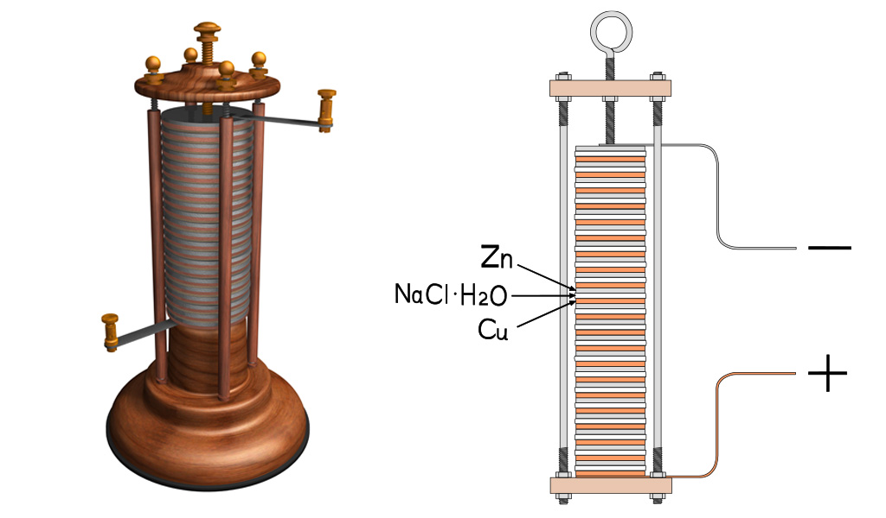
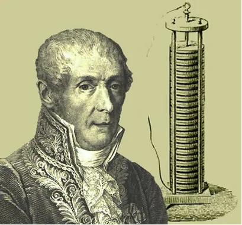
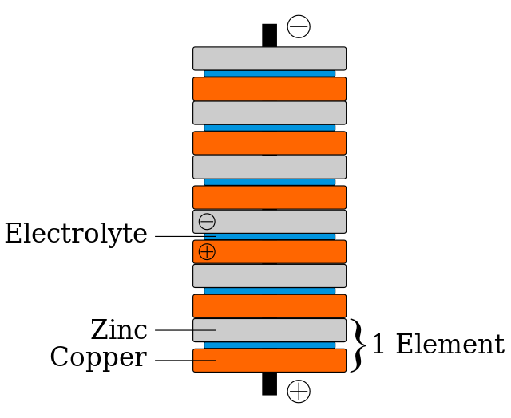
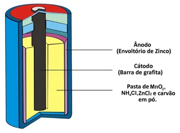
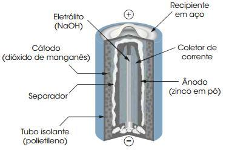
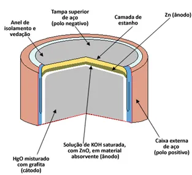

Descoberta das Pilhas e seus Tipos
A invenção da Pilha Voltaica
O primeiro físico a realizar experimentos relacionados às pilhas elétricas foi Galvani, mas a interpretação dos resultados por ele foi errada. Volta repetiu os experimentos e propôs uma interpretação que se mostrou exata para os fenômenos observados por Galvani.
Foi em 1800, que ele causou uma enorme agitação no mundo científico. Provando sua teoria, Volta empilhou discos alternados de zinco e cobre, separando-os por pedaços de tecidos embebidos em solução de ácido sulfúrico. Sempre que um fio condutor era ligado aos discos de zinco e de cobre das extremidades, o aparelho produzia corrente elétrica. Surgia a pilha de Volta.
|  |  |  |
Tipos de Pilhas:
PILHA SECA

|  |
Outras duas denominações que esse tipo de pilha recebe devido a sua constituição é pilha ácida ou pilha de zinco-carbono. Ela é basicamente formada por um envoltório de zinco separado das demais espécies químicas que compõem a pilha por meio de um papel poroso.
Esse zinco corresponde ao polo negativo da pilha ou ânodo, pois ele se oxida, perdendo dois elétrons.
Essa pilha também possui um polo positivo, o cátodo, que é uma barra de grafita instalada no meio da pilha envolvida por dióxido de manganês (MnO2), carvão em pó (C) e por uma pasta úmida contendo cloreto de amônio (NH4Cl), cloreto de zinco (ZnCl2) e água (H2O). |
PILHA ALCALINA

|  |
As pilhas alcalinas recebem este nome por que são feitas a partir de bases, possuem d.d.p de 1,5 V e não são recarregáveis.
A pilha alcalina é composta por uma mistura eletrolítica: pasta básica de NaOH (hidróxido de sódio - bom condutor eletrolítico). Já a pilha seca comum contém cloreto de amônio NH4Cl (sal ácido) e recebe a classificação de ácida. As pilhas alcalinas duram cerca de cinco vezes mais que as ácidas. O Hidróxido de sódio possui maior condutividade elétrica e consequentemente vai transportar energia mais rapidamente que o Cloreto de amônio. Esta reação rápida em pilhas básicas proporciona maior vida útil aos seus constituintes. |
PILHA DE MERCÚRIO

|  |
As pilhas de mercúrio são utilizadas em relógios digitais, relógios de pulso, máquinas fotográficas, calculadoras, agendas eletrônicas, aparelhos auditivos e outros aparelhos elétricos portáteis que exigem um trabalho eficiente e durabilidade, já que essas pilhas possuem voltagem de 1,35 V.
Toda pilha é formada por dois eletrodos, o ânodo (polo negativo) e o cátodo (polo positivo), e por um eletrólito. No caso da pilha de mercúrio, o ânodo é formado por uma cápsula de zinco metálico (Zn(s)) e o cátodo por óxido de mercúrio II (HgO(s)). Tanto o Zn como o HgO são transformados em pó e compactados para que a pilha fique o menor possível. O eletrólito é feito de uma solução de hidróxido de potássio saturada (KOH(aq)). |
Diferença entre Pilhas e Baterias
A diferença entre as pilhas e baterias está no fato de que as pilhas, também chamadas de células eletroquímicas, são formadas por dois eletrodos (positivo (cátodo) e negativo (ânodo)) onde ocorrem respectivamente as semirreações de redução e oxidação, além de um eletrólito, que é uma solução condutora de íons.
Já as baterias são formadas por várias pilhas ligadas em série ou em paralelo. Graças a isso, as baterias produzem uma corrente elétrica muito mais forte que as pilhas.
Diferença entre Pilhas/Baterias Recarregáveis e Não-Recarregáveis
Recarregáveis: Uma pilha pode ser recarregada quando todas as suas semi-reações forem reversíveis. Existem diferentes tipos de pilhas recarregáveis, como níquel-metal-hidreto (NiMH), íon de lítio e níquel-cádmio (NiCd). O processo de recarga reverte a reação química dentro da pilha, restaurando sua capacidade de fornecer energia.Não-Recarregáveis: As pilhas não recarregáveis são conhecidas como descartáveis e são aquelas em que ocorre semi-reação não reversível. Geralmente são feitas com zinco-carbono ou alcalinas. Elas têm uma reação química irreversível que gera eletricidade, mas uma vez que a reação é completa, a pilha não pode mais ser usada e deve ser descartada, pilhas como a Alcalina e a de Mercúrio citadas neste trabalho não são recarregáveis.